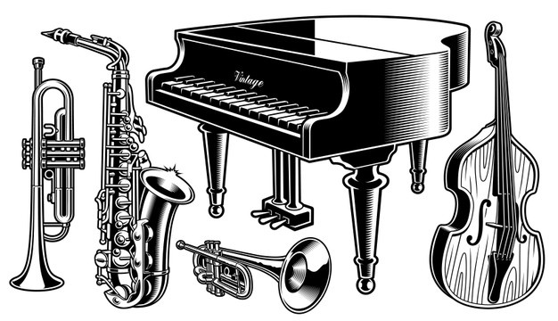

IL JAZZ
Il genere musicale che molto dopo la sua nascita verrà chiamato dispregiativamente "jazz" (sembra che in gergo significhi pressappoco "osceno"), trova la sua origine nel popolo afroamericano. I canti di lavoro (work-songs), i canti d'amore (blues) e i canti religiosi (spirituals) giunsero ad una sintesi originale probabilmente dopo la guerra di secessione e quindi alla fine della schiavitù nera. Ancor prima che apparisse il nome "jazz", il pianoforte fu il protagonista della prima diffusione di quello stile, attraverso una particolare forma, ovvero il ragtime. Trova il suo ambiente naturale nei caffè, nelle sale da ballo e in tutti quei luoghi di aggregazione e divertimento. Dal 1890 circa fino al 1917 sarà proprio in un quartiere di bordelli di New Orleans, noto come Story-Ville, che il jazz si svilupperà mediante la formazione dei primi gruppi strumentali. Qui si sperimentano grandi novità stilistiche: l'amore per i timbri squillanti, solistici, violenti, che sembrano nascere da accostamenti casuali tra cornetta, banjo, batteria e clarinetto. Questo è il jazz in cui predomina una sorta di prodigiosa improvvisazione collettiva, frastornante e convulsa. A partire dal 1917 seguì la diaspora di qualche centinaio di musicisti afroamericani verso le città, dove non mancavano certo i luoghi di ritrovo frequentati sia da perone bianche che nere, desiderosi di una musica così trascinante e in sospetto di elettrizzante eccitazione. A questo punto il jazz divenne sempre più popolare affermandosi anche come musica da ballo e nei locali notturni. Molti protagonisti, tra cui il sassofonista Sidney Bechet fecero tournée in Europa, portando anche nel nostro continente questa musica. Tra i primi solisti è necessario ricordare Louis Armstrong, il quale dopo essere stato seconda cornetta nella Creole Jazz Band di King Oliver, divenne famoso anche grazie alle registrazioni con i suoi gruppi, gli Hot Five e gli Hot Seven nel 1925. Louis Armstrong sarà uno degli esponenti principali del Jazz. Nacquero le prime grandi orchestre, le big band come quelle di Fletcher Henderson, di Paul Whiteman (il primo esecutore della Rapsodia in blu di George Gershwin) e di Duke Ellington. New York divenne in breve, dopo Chicago, una delle capitali del jazz, determinando l'inizio dell'età del jazz.
Louis Armstrong
Louis Daniel Armstrong noto anche con il soprannome di Satchmo o Pops (New Orleans, 4 agosto 1901 - New York, 6 luglio 1971) è stato un trombettista, cantante e attore statunitense. Attraverso varie esibizioni, le abilità musicali di Armstrong maturarono. A vent'anni riusciva a leggere bene la musica e iniziò ad essere incluso in vari assoli di tromba, diventando uno dei primi jazzisti che avevano questa capacità, riuscendo però ad inserire, negli assoli, la sua personalità ed il suo stile. Creò un proprio suono, unico e fortemente caratterizzato, e inoltre iniziò a cantare nelle sue esibizioni. Fu nel 1922 che Armstrong si unì alla grande immigrazione nella città di Chicago, dove venne invitato dal suo mentore Joe "King" Oliver a unirsi alla sua band. Da qui ebbe inizio la sua lunga carriera che lo vide al centro della scena musicale grazie a brani come "What a Wonderful World" "La Vie en rose" "Dream a little dream of me". Importante fu la collaborazione con Ella Fitzgerald con la quale incise il capolavoro "Cheek to Cheek". Louis Armstrong è sicuramente un artista a tutto tondo, che regalerà per sempre grandi emozioni ai suoi ascoltatori.
John Coltrane
John William Coltrane (Hamlet, 23 settembre 1926 - New York, 17 luglio 1967) è stato un sassofonista e compositore statunitense. Tra i più grandi sassofonisti della storia del jazz, è stato tra i capisaldi del genere (in particolare di quello modale) degli anni sessanta, chiudendo il periodo del bop e aprendo quello del free jazz. Il pensiero musicale di Coltrane ha influenzato numerosi musicisti a venire. L'incontro del 1955 con Miles Davis segnò profondamente la carriera di Coltrane. Davis aveva bisogno di un saxofonista e così, dopo un provino, Miles Davis fu stupito da Coltrane. Il saxofonista sfruttò l'occasione di incontro con un collega per crescere musicalmente. Nel 1959 incide sette dischi tra i quali Giant Steps che segna il punto di inizio della ascesa musicale di Coltrane. Nel 1960 Coltrane forma il suo primo quartetto: vi figurano il pianista McCoy Tyner, il bassista Steve Davis ed il batterista Elvin Jones che, con il suo drumming possente e l'innovativo approccio ritmico, influenzerà notevolmente la musica del sassofonista. La musica di John Coltrane ha segnato lo sviluppo e la conoscenza del saxofono, tanto che lo strumento è legato a lui come a pochi altri. Coltrane è il mito di ogni saxofonista jazz e di ogni buon ascoltatore.
Miles Davis
Miles Dewey Davis III (Alton, 26 maggio 1926 - Santa Monica, 28 settembre 1991) è stato un trombettista e compositore statunitense jazz, considerato uno dei più influenti, innovativi e originali musicisti del XX secolo.